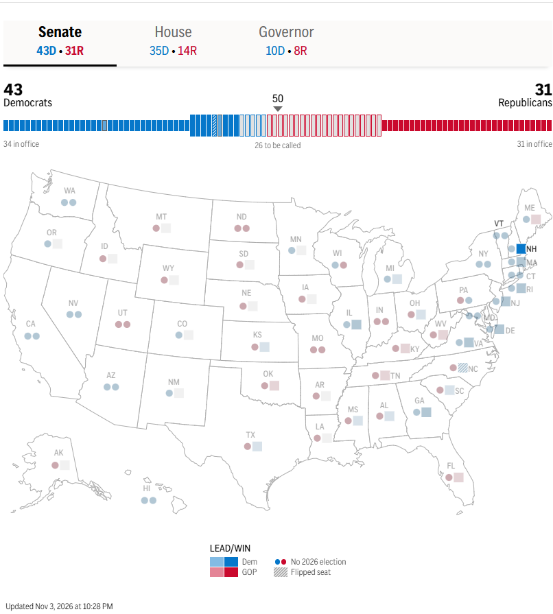
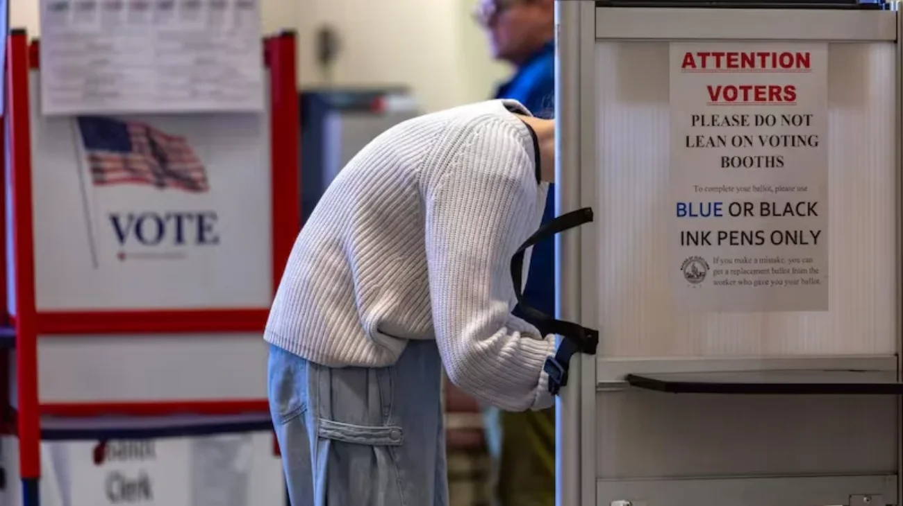

El día martes 3 de noviembre se realizan las elecciones legislativas en Estados Unidos. En las elecciones de mitad de mandato, se decide la composición del Congreso, La composición puede influir significativamente en las acciones que el Presidente puede llevar a cabo durante su mandato.
Todavía no hay novedades. Esta página se actualiza sola.
ONG destaca la normalidad de los comicios y descarta incidentes graves a nivel nacional
4 de Noviembre - 00:11 hs
MacroMind News
A medida que concluye el proceso de votación en todo el territorio estadounidense,
la organización de defensa del derecho al voto Common Cause confirmó que la jornada electoral de medio término transcurrió con absoluta normalidad y sin disrupciones de magnitud en los centros de sufragio de todo el país.
Durante una conferencia de prensa posterior al cierre de las mesas, la presidenta y directora ejecutiva de la entidad, Virginia Kase Solomón, destacó el desarrollo pacífico de las elecciones a escala nacional:
“Una vez más, la jornada transcurrió sin mayores incidentes. Como deberían ser nuestras elecciones. Es realmente estupendo ver que se están desarrollando comicios normales”.
De acuerdo con los reportes consolidados por los directores regionales del organismo en estados clave como Arizona, Carolina del Norte, Texas, California y Hawái, los imprevistos registrados a lo largo del día se limitaron a contratiempos logísticos menores —tales como demoras originadas por inclemencias meteorológicas, filas extensas en horas pico y denuncias puntuales por proselitismo en las inmediaciones de los colegios electorales—, los cuales fueron resueltos con celeridad por las autoridades locales.
La demócrata Rebecca Bennett vence a Thomas Kean Jr. en el distrito de Bedminster
3 de Noviembre - 23:55 hs
MacroMind News
La expiloto de la Marina y candidata demócrata Rebecca Bennett se impuso en las elecciones para la Cámara de Representantes por el 7.º distrito congresional de Nueva Jersey tras derrotar al republicano Thomas H. Kean Jr., de acuerdo con las proyecciones de Associated Press emitidas a las 21:48 (hora del Este).
La victoria de Bennett representa un vuelco clave al arrebatarle a la oposición un distrito históricamente emblemático —que alberga el club de golf Bedminster de Donald Trump— y mantener la volatilidad de la zona, que ha cambiado de signo político en las últimas elecciones de medio término.

Durante la campaña, Bennett articuló su propuesta enfocándose en el costo de vida, la política exterior y la restricción de aranceles:
- Estrategia económica y exterior: Capitalizó el malestar social por la inflación, exigió el fin del conflicto bélico con Irán y solicitó un freno congresional al uso discrecional de aranceles de importación.
- Coyuntura de la oposición: El legislador derrotado, Thomas Kean Jr., llegó debilitado tras ausentarse en más de 100 votaciones parlamentarias este año producto de un cuadro depresivo.
Con este resultado, el Partido Demócrata consolida un nuevo escaño en el estado de Nueva Jersey y suma un punto estratégico en la disputa por el control de la Cámara Baja.
Ashley Moody retiene la banca del Senado por Florida y califica su triunfo como "una victoria de la libertad sobre el socialismo"
3 de Noviembre - 23:43 hs
MacroMind News
La senadora republicana Ashley Moody confirmó su permanencia en el Congreso al imponerse en la elección especial al Senado de Estados Unidos por el estado de Florida frente a la candidata demócrata Angie Nixon. Con este resultado, el Partido Republicano logra conservar la banca que Moody ocupaba de forma interina tras la designación de Marco Rubio como secretario de Estado a comienzos de 2025.
Durante su discurso de victoria, Moody enfatizó el tono ideológico de la campaña y declaró que los votantes optaron por la continuidad de las ideas conservadoras en el estado:
“Durante toda la campaña, dije que esta elección se reduciría a una cuestión de libertad contra socialismo. Pues bien, Florida eligió la libertad. Somos el corazón palpitante de la libertad, no solo para los Estados Unidos de América, sino para el resto del mundo”.
La contienda estuvo marcada por el marcado contraste de perfiles: mientras Moody contó con el respaldo de la estructura conservadora del estado, Nixon —dirigente sindical vinculada a los Socialistas Democráticos de América (DSA)— impulsó una plataforma centrada en la sanidad universal y el cuidado infantil. El triunfo le permite a Moody completar el mandato correspondiente en la Cámara Alta hasta las elecciones de 2028.
El demócrata Roy Cooper gana en Carolina del Norte y le arrebata una banca decisiva al Partido Republicano
3 de Noviembre - 23:42 hs
MacroMind News
El exgobernador demócrata Roy Cooper obtuvo una holgada victoria en las elecciones al Senado de los Estados Unidos por el estado de Carolina del Norte tras derrotar al republicano Michael Whatley. El triunfo representa un vuelco clave en la Cámara Alta al arrebatarle a los conservadores un escaño estratégico en un estado clave del sureste norteamericano.
Cooper, quien gobernó el estado imponiéndose en comicios ajustados en 2016 y 2020, capitalizó su perfil de gestión local y superó por amplio margen a Whatley en la contienda para suceder al republicano retirado Thom Tillis. La victoria consolida las aspiraciones del Partido Demócrata de alterar el balance de poder en el Congreso nacional.
El republicano Kevin Hern gana en Oklahoma y retiene el escaño del Senado para los conservadores
3 de Noviembre - 23:38 hs
MacroMind News
El representante republicano Kevin Hern obtuvo la victoria en las elecciones al Senado de Estados Unidos por el estado de Oklahoma tras derrotar a la demócrata N'Kiyla Jasmine Thomas, de acuerdo con las proyecciones de Associated Press emitidas a las 21:36 (hora del Este).
Hern, legislador de la Cámara Alta desde 2018 y cercano aliado del presidente Donald Trump, asumirá formalmente el escaño que dejó libre Markwayne Mullin tras ser confirmado a principios de año como secretario de Seguridad Nacional. El escaño había sido ocupado de forma interina por el ejecutivo energético Alan Armstrong.
Los votantes de Virginia aprueban una enmienda que blindó el derecho al aborto en la Constitución estatal
3 de Noviembre - 23:32 hs
MacroMind News
Los ciudadanos de Virginia respaldaron en las urnas este martes una enmienda constitucional que establece un "derecho fundamental a la libertad reproductiva", garantizando la protección legal para la interrupción del embarazo en el estado.
La medida aprobada otorga respaldo constitucional al acceso al aborto durante los dos primeros trimestres del embarazo y faculta al gobierno local a regular la práctica únicamente en el tercer trimestre, salvaguardando en todo momento la salud y vida de la persona gestante. Adicionalmente, el texto blinda el derecho a la anticoncepción y a los tratamientos de fertilidad.
Con este resultado, Virginia se suma a la lista de más de diez estados que han recurrido a consultas populares y reformas constitucionales para blindar los derechos reproductivos a nivel local, en respuesta al fallo de la Corte Suprema de EE.UU. de 2022 que revocó Roe v. Wade.
Histórica victoria demócrata en Georgia tras el triunfo de Keisha Lance Bottoms
3 de Noviembre - 23:25 hs
MacroMind News
La demócrata Keisha Lance Bottoms se adjudicó las elecciones a la gobernación del estado de Georgia tras derrotar al empresario republicano
Rick Jackson, según las proyecciones de
Associated Press emitidas a las 21:24 (hora del Este).
Con este triunfo, Bottoms —exalcaldesa de Atlanta y exasesora de la administración de Joe Biden— marca un hito político doble: se convierte en la primera exalcaldesa de la capital en acceder al cargo y rompe casi tres décadas de hegemonía conservadora en la gobernación estatal, devolviéndole el poder ejecutivo al Partido Demócrata por primera vez desde 1998. Jackson, un magnate de la salud que financió de forma masiva su propia campaña, no logró retener para el Partido Republicano el cargo que deja vacante Brian Kemp por límite de mandatos.
La demócrata Stefany Shaheen conserva el primer distrito de Nuevo Hampshire para su partido
3 de Noviembre - 23:23 hs
MacroMind News
La exconcejala de Portsmouth, Stefany Shaheen, ganó las elecciones al Congreso en el 1.er Distrito Congresional de Nuevo Hampshire tras derrotar al candidato republicano Anthony DiLorenzo, de acuerdo con las proyecciones publicadas por Associated Press.
Con esta victoria, el Partido Demócrata retiene la banca vacante que deja Chris Pappas en su aspiración al Senado. Shaheen —hija de la senadora saliente Jeanne Shaheen— centró su campaña en el acceso a la salud y la salud reproductiva, logrando frenar el avance de DiLorenzo, un candidato respaldado por Donald Trump.
Zohran Mamdani tras el triunfo de Kathy Hochul: “El trabajo de los demócratas comienza ahora”
3 de Noviembre - 23:22 hs
MacroMind News
Durante la cobertura de los resultados electorales en Manhattan, el alcalde de la ciudad de Nueva York, Zohran Mamdani, celebró la victoria y reelección de la gobernadora Kathy Hochul. El jefe comunal subrayó la necesidad de ofrecer una alternativa concreta frente al Partido Republicano y reforzar las políticas de gestión del Partido Demócrata.
“Juntos tenemos la oportunidad de demostrar que los demócratas podemos cumplir y ofrecer una alternativa a las promesas vacías y las constantes traiciones de la derecha”, afirmó Mamdani desde el escenario, al tiempo que remarcó que el despliegue territorial iniciado en Nueva York debe proyectarse hacia el resto del país.
Ned Lamont es reelecto en Connecticut y asegura un tercer mandato como gobernador
3 de Noviembre - 23:19 hs
MacroMind News
El gobernador demócrata Ned Lamont consiguió la reelección en Connecticut tras imponerse al candidato republicano y senador estatal Ryan Fazio, de acuerdo con las proyecciones emitidas por la agencia Associated Press. Lamont, un exempresario del sector del cable, iniciará su tercer período consecutivo al frente del ejecutivo estatal, garantizando la continuidad de la gestión demócrata en la región de Nueva Inglaterra.
El republicano Andy Barr gana en Kentucky y retiene la banca vacante de Mitch McConnell
3 de Noviembre - 23:18 hs
MacroMind News
El republicano Andy Barr ganó la elección al Senado por el estado de Kentucky tras derrotar al candidato demócrata y exlegislador estatal Charles Booker, según las proyecciones de Associated Press. Barr, quien se desempeñó durante siete mandatos en la Cámara de Representantes y contó con el respaldo explícito de Donald Trump, conservará para el Partido Republicano el histórico escaño en la Cámara Alta que deja vacante Mitch McConnell.
Sorpresa en Florida tras la victoria de la demócrata Pia Dandiya en el distrito 22
3 de Noviembre - 23:13 hs
MacroMind News
La educadora y exdirectora de escuela Pia Dandiya dio el batacazo de la jornada en Florida al ganar la banca por el distrito congresional número 22 de la Cámara de Representantes, tras derrotar al republicano Casey Askar. La victoria demócrata adquiere un valor estratégico extraordinario al darse en un territorio rediseñado con perfil conservador a instancias de la redistribución de distritos promovida por el oficialismo para retener la mayoría en el Capitolio.
Byron Donalds gana en Florida y se convierte en el primer gobernador afroamericano del estado
3 de Noviembre - 23:10 hs
MacroMind News
El congresista republicano y firme aliado de Donald Trump, Byron Donalds, se adjudicó la gobernación de Florida tras derrotar al exrepresentante demócrata David Jolly, según confirmó Associated Press. Con este triunfo, Donalds marca un hito histórico al convertirse en el primer gobernador afroamericano del estado y asegura la continuidad del Partido Republicano en el poder ejecutivo floridano —distrito donde la oposición no logra imponerse desde 1994—, sucediendo en el cargo a Ron DeSantis.
Los demócratas logran arrebatarle una banca clave a los republicanos en Carolina del Norte
3 de Noviembre - 23:07 hs
MacroMind News
El candidato demócrata Jamie Ager consiguió el primer gran vuelco de la noche en la Cámara de Representantes al imponerse en el distrito 11 del oeste de Carolina del Norte. Ager, un agricultor local cuya perfil del sector agrario resultó determinante para conectar con el electorado rural, derrotó a la legisladora estatal republicana Jennifer Balkcom en la contienda por la banca vacante tras el retiro de Chuck Edwards. La victoria le otorga al Partido Demócrata un escaño que estaba en manos de la oposición, marcando un avance estratégico en la pelea por el control del Congreso.
El demócrata Ben Ray Luján revalida su banca en el Senado por Nuevo México
3 de Noviembre - 23:06 hs
MacroMind News
El senador demócrata
Ben Ray Luján logró asegurar la reelección en Nuevo México tras derrotar al candidato republicano
Larry E. Marker, de acuerdo con las proyecciones emitidas por
Associated Press. Con este triunfo, Luján garantiza un segundo mandato en la Cámara Alta, habiendo enfocado su propuesta electoral en la reducción de costos de vida y el acceso a la salud en un distrito de histórica inclinación demócrata.

El demócrata Phil Weiser gana la gobernación de Colorado
3 de Noviembre - 23:05 hs
MacroMind News
El fiscal general de Colorado y demócrata Phil Weiser fue electo gobernador tras derrotar al candidato republicano y veterano de los Marines, Victor Marx, según las proyecciones de Associated Press. Weiser, con trayectoria previa en los gobiernos de Barack Obama y Bill Clinton, sucederá en el cargo al actual gobernador demócrata Jared Polis, imposibilitado de reelegirse por límite de mandatos.
El demócrata John Hickenlooper revalida su banca en el Senado por Colorado
3 de Noviembre - 23:04 hs
MacroMind News
El senador demócrata John Hickenlooper logró la reelección en Colorado tras imponerse al candidato republicano y actual senador estatal Mark Baisley, según las proyecciones de la agencia Associated Press emitidas a las 21:00 (hora del Este). Con este triunfo, el dirigente ratifica la hegemonía de su espacio en uno de los distritos clave del oeste del país.
Harriet Hageman gana la banca del Senado en Wyoming y el Partido Republicano suma un escaño clave
3 de Noviembre - 23:04 hs
MacroMind News
La republicana Harriet Hageman logró la victoria en las elecciones de este martes al Senado de los Estados Unidos por el estado de Wyoming tras derrotar al candidato demócrata y exrepresentante estatal James Byrd, según las proyecciones de la agencia Associated Press emitidas a las 21:00 (hora del Este). Con este resultado, la bancada conservadora asegura la retención de un escaño estratégico en la Cámara Alta.
Hageman, quien se desempeñaba como representante en la Cámara Baja desde 2023, pasará ahora al Senado para suceder a la republicana Cynthia Lummis tras su retiro de la actividad parlamentaria. La legisladora electa contó con el respaldo explícito del presidente Donald Trump y capitalizó la marcada hegemonía del electorado conservador en el estado.
El republicano Eric Barlow gana la gobernación de Wyoming y asegura la continuidad en el estado
3 de Noviembre - 23:02 hs
MacroMind News
El republicano Eric Barlow se impuso en las elecciones comiciales de este martes para la gobernación de Wyoming tras derrotar al candidato demócrata Kenneth Casner, según las proyecciones de la agencia Associated Press. Con este resultado, el Partido Republicano garantiza la continuidad de su hegemonía en el poder ejecutivo del estado del oeste norteamericano.
Kathy Hochul es reelecta gobernadora de Nueva York y asegura un segundo mandato completo
3 de Noviembre - 23:01 hs
MacroMind News
La gobernadora demócrata Kathy Hochul logró la reelección en el estado de Nueva York tras imponerse al candidato republicano y ejecutivo del condado de Nassau, Bruce Blakeman, según las proyecciones emitidas por la agencia Associated Press. De esta manera,
el Partido Demócrata retiene la gobernación en uno de sus principales bastiones de la Costa Este.
Hochul, quien asumió la conducción del estado en 2021 tras la renuncia de Andrew Cuomo y obtuvo su primer mandato completo en las urnas al año siguiente, iniciará así su segundo período al frente del ejecutivo neoyorquino. La victoria ratifica el predominio demócrata en la gobernación estatal frente a la postulación de Blakeman, quien contaba con el respaldo del presidente Donald Trump.
Ashley Moody retiene la banca del Senado por Florida y asegura un triunfo clave para los republicanos
3 de Noviembre - 22:59 hs
MacroMind News
La senadora republicana Ashley Moody se adjudicó la victoria en la contienda para la Cámara Alta por el estado de Florida tras imponerse en un ajustado comicio ante la candidata demócrata y representante estatal Angie Nixon, según las proyecciones de Associated Press. Con este triunfo, el Partido Republicano logra retener un escaño estratégico en el "Estado del Sol", consolidando su peso territorial en la batalla nacional por la mayoría del Congreso.

La contienda despertó un fuerte interés debido al repunte competitivo de la oposición en un territorio donde los conservadores venían mostrando una clara hegemonía electoral. Pese al intenso despliegue territorial de Nixon en los principales condados del estado, el respaldo del electorado conservador le permitió a Moody revalidar la banca parlamentaria en el Capitolio y asegurar una posición clave para el mapa político de Washington.
Shelley Moore Capito gana en Virginia Occidental y asegura una banca clave para los republicanos
3 de Noviembre - 22:58 hs
MacroMind News
La senadora republicana Shelley Moore Capito obtuvo la reelección en Virginia Occidental tras imponerse a la candidata demócrata Rachel Fetty Anderson. Con esta victoria, la legisladora iniciará su tercer mandato consecutivo en la Cámara Alta, consolidando el dominio del Partido Republicano en un escaño vital para sostener el control parlamentario.
La senadora republicana Shelley Moore Capito obtuvo la reelección en Virginia Occidental tras imponerse a la candidata demócrata Rachel Fetty Anderson. Con esta victoria, la legisladora iniciará su tercer mandato consecutivo en la Cámara Alta, consolidando el dominio del Partido Republicano en un escaño vital para sostener el control parlamentario.
JB Pritzker hace historia en Illinois al asegurar un tercer mandato y afianza su proyección nacional
3 de Noviembre - 22:52 hs
MacroMind News
El gobernador demócrata JB Pritzker conquistó la reelección en Illinois tras derrotar por segunda vez al candidato republicano y exlegislador estatal, Darren Bailey. Con este triunfo, el multimillonario empresario y heredero de la cadena hotelera Hyatt asegura un inédito tercer período consecutivo en el cargo, reeditando la victoria que ya le había obtenido ante el propio Bailey.
La victoria consolida el peso político de Pritzker dentro del Partido Demócrata y refuerza su posición en el escenario nacional. Al convertirse en el primer gobernador de su espacio en ser electo tres veces seguidas en el estado, su figura termina de afirmarse como uno de los perfiles con mayor proyección e interés de cara a las elecciones presidenciales de 2028.
El triunfo de Chris Pappas en Nuevo Hampshire frena las aspiraciones republicanas en el Senado
3 de Noviembre - 22:47 hs
MacroMind News
El congresista demócrata Chris Pappas se adjudicó la victoria en la contienda para el Senado por Nuevo Hampshire tras derrotar al exsenador republicano John Sununu. Con este triunfo, la bancada demócrata logra bloquear una de las principales oportunidades del Partido Republicano para arrebatar una banca y expandir su mayoría en la Cámara Alta. El resultado reviste además un hito histórico, al convertirse Pappas en el primer hombre abiertamente gay electo para el Senado de los Estados Unidos.
Durante la campaña, Pappas apeló al contraste llamando a su rival "el Sununu equivocado" para distanciarlo de la popularidad de su hermano, el exgobernador Chris Sununu. Con los triunfos demócratas confirmados en Nuevo Hampshire y Georgia, la atención de la contienda nacional por el equilibrio del Senado se traslada ahora al estado de Michigan, donde el demócrata Abdul El-Sayed y el republicano Mike Rogers disputan un escaño estratégico.
Los demócratas toman ventaja inicial en la batalla por el Senado tras ganar en Georgia y otros seis estados
3 de Noviembre - 22:34 hs
MacroMind News
Las primeras proyecciones de las elecciones de medio término marcan una tendencia favorable para el Partido Demócrata en la Cámara Alta. La fuerza de la oposición se impuso de entrada en siete distritos, destacándose el crucial triunfo de Jon Ossoff sobre el republicano Mike Collins en Georgia, una de las plazas clave y más disputadas del país.

Además del contundente resultado en el sur, el bloque demócrata aseguró bancas en sus bastiones tradicionales: Juliana Stratton se impuso ante Don Tracy en Illinois; Cory Booker derrotó a Justin Murphy en Nueva Jersey; y Ed Markey retuvo su lugar frente a John Deaton en Massachusetts. La victoria se completó con los triunfos de Jack Reed sobre Raymond McKay en Rhode Island, Chris Coons ante Mike Katz en Delaware —el estado natal del expresidente Joe Biden— y Mark Warner, quien se impuso sobre Bert Mizusawa en Virginia.
El demócrata Josh Shapiro revalida su mandato en Pensilvania y consolida su perfil nacional
3 de Noviembre - 22:20 hs
MacroMind News
El actual gobernador de Pensilvania, el demócrata Josh Shapiro, logró asegurar la reelección tras imponerse a la candidata republicana y tesorera estatal, Stacy Garrity, según las proyecciones de la agencia Associated Press. Con este triunfo, la gobernación del estado bisagra de la Costa Este permanecerá bajo gestión demócrata por un segundo mandato consecutivo.
La victoria fortalece la proyección política de Shapiro, quien ya se desempeñó como fiscal general del estado durante dos períodos previos. Al retener con solvencia un estado clave para el equilibrio de poder en Estados Unidos, el dirigente demócrata termina de consolidar su posición en el escenario político nacional y reafirma su figura de cara a una eventual aspiración presidencial en 2028.
El demócrata Mark Warner retiene la banca del Senado por Virginia y le da el primer triunfo a su partido
3 de Noviembre - 22:20 hs
MacroMind News
El senador demócrata Mark Warner logró asegurar la reelección en Virginia tras derrotar al candidato republicano y mayor general retirado del Ejército, Bert Mizusawa, según las proyecciones iniciales de la agencia Associated Press. Con este resultado, Warner obtiene su cuarto mandato consecutivo en el Capitolio, donde ejerce como vicepresidente del Comité de Inteligencia de la Cámara Alta.
La victoria resulta clave al consolidarse en un distrito estratégico habitado por una alta concentración de empleados del sector público. Este electorado se vio fuertemente impactado por las políticas de recorte sobre la plantilla gubernamental impulsadas al inicio de la segunda gestión de Donald Trump, factor que fortaleció la base electoral demócrata en la región.
Se acerca el cierre de urnas en la Costa Este y arranca la expectativa por los primeros cómputos
3 de Noviembre - 19:17 hs
MacroMind News
Tras una intensa jornada que comenzó a las 7 de la mañana, la elección legislativa en Estados Unidos entra en su etapa decisiva con el inminente cierre de los centros de votación en la Costa Este. La clausura de mesas se dará de forma escalonada entre las 19 y las 21 horas según el territorio y el huso horario local, dando paso a la difusión progresiva de las primeras tendencias en distritos clave.
Para garantizar la transparencia del proceso, las autoridades electorales recordaron que todos los ciudadanos que se encuentren formados en la fila al momento del cierre oficial del centro tienen pleno derecho garantizado a emitir su sufragio. Con el inicio del conteo en los estados orientales, Washington se prepara para una velada crucial que definirá el mapa político y el control del Congreso para los próximos dos años.
Masiva participación en los estados clave marca una jornada decisiva para el Congreso
3 de Noviembre - 19:07 hs
MacroMind News
Una multitudinaria movilización de votantes marca el ritmo de las elecciones legislativas en Estados Unidos, sumándose a los más de 50 millones de ciudadanos que ya habían ejercido su sufragio de forma anticipada. Los niveles de afluencia en distritos clave como Ohio y Georgia registran guarismos que superan a las intermedias de 2022 y se acercan a los guarismos de las últimas presidenciales.

Con las mesas aún abiertas en todo el país, las autoridades monitorean si la concurrencia logrará amenazar el récord histórico de 2018, cuando votaron más de 120 millones de personas. El desenlace del conteo al cierre de la jornada resulta determinante para definir las mayorías y el equilibrio de poder en el Congreso.
Un candidato ausente y otro en prisión enturbian la batalla clave por el Senado en Alaska
3 de Noviembre - 17:09 hs
MacroMind News
Una inusual controversia sacude al estado de Alaska durante los comicios legislativos, donde las boletas impresas incluyen a dos postulantes atípicos y ausentes: el independiente Daniel S. Sullivan Jr., investigado por una presunta candidatura "fantasma" diseñada para confundir al electorado y restar votos al senador republicano en ejercicio Dan Sullivan, y Erick Hafner, un aspirante a la Cámara de Representantes registrado como demócrata que permanece detenido en Nueva York.
La anomalía cobra relevancia nacional en Washington debido a que el resultado en el estado más extenso del país puede definir la paridad y el control final del Senado en el Capitolio. Con las encuestas mostrando un virtual empate entre el Senador Sullivan y la excongresista demócrata Mary Peltola, la presencia en la papeleta del docente jubilado Sullivan Jr. encendió alarmas e investigaciones, dado que el ajustado escrutinio definitivo podría dirimirse por apenas una centena de sufragios.
Fallas en las máquinas de Nueva York demoran el conteo en un distrito clave
3 de Noviembre - 16:48 hs
MacroMind News
Las urnas automáticas del condado de Westchester dejaron de procesar boletas en medio de comicios legislativos decisivos para el control de la Cámara de Representantes.
Un desperfecto técnico en los escáneres del condado de Westchester obligó a las autoridades electorales de Nueva York a resguardar los votos de forma manual en bolsas selladas. La falla afecta directamente al estratégico distrito 17, donde el republicano Mike Lawler y la demócrata Cait Conley disputan una banca que puede definir la mayoría en el Congreso.
Ante la posibilidad de que el incidente retrase el escrutinio final, el ejecutivo del condado, Ken Jenkins, y la fiscal general del estado, Letitia James, pidieron disculpas a la ciudadanía y solicitaron no abandonar las filas. Pese a las demoras y a las idas y vueltas sobre el origen del fallo en las máquinas, los funcionarios garantizaron la validez de cada papeleta y aseguraron que la fiscalización sobre el conteo es total.
Trump celebró el primer triunfo republicano en Guam y se entusiasma de cara al recuento nacional
3 de Noviembre - 15:20 hs
MacroMind News
Entusiasmado por la primicia, el presidente Donald Trump publicó un mensaje en su red social Truth Social en el que felicitó al gobernador electo y calificó el resultado como una señal optimista para el resto de la contienda: "¡Vaya, ojalá esto sea un indicio de lo que está por venir!". De esta manera, la Casa Blanca busca marcar la cancha de cara al cierre de mesas y al conteo definitivo en los estados clave de la Unión.
Donald Trump anuncio es desfinanciamiento a Israel y cambia el esquema de asistencia militar
3 de Noviembre - 14:29 hs
MacroMind News
El presidente de Estados Unidos, Donald Trump, anunció de forma sorpresiva que su administración dejará de financiar con 4.000 millones de dólares anuales en asistencia militar a Israel a partir de finales de este año, adelantándose al memorando bilateral que regía hasta 2028. Tras consensuarlo con el primer ministro israelí, Benjamín Netanyahu, el mandatario estadounidense justificó la medida señalando que el Estado hebreo es actualmente una economía muy próspera y un socio que "ya no necesita" dicho subsidio financiero. Asimismo, Trump argumentó que este flujo de fondos era utilizado sistemáticamente por sectores de la oposición demócrata y la izquierda en Washington para cuestionar la alianza estratégica, aunque aclaró que Washington mantendrá su respaldo y asistirá militarmente a Tel Aviv ante cualquier eventualidad crítica futura.
Con este giro drástico en la política exterior y de defensa de la Casa Blanca, el vínculo económico directo entre ambas naciones sufrirá una modificación histórica, obligando a Israel a autofinanciar la adquisición de su propio equipamiento bélico en los mercados internacionales. A pesar de la interrupción de esta partida de asistencia regular, las instituciones de ambas potencias aseguraron que la cooperación geopolítica, de inteligencia y de seguridad militar se mantendrá intacta, permitiendo que Tel Aviv continúe comprando armamento estadounidense con sus propios recursos. La decisión se da en un contexto regional sumamente complejo en Medio Oriente y coincide con las gestiones diplomáticas de la administración norteamericana para encauzar vías de diálogo y poner fin a los conflictos abiertos en la zona.
¿Qué dicen las últimas encuestas sobre las elecciones de Estados Unidos?
28 de Octubre - 23:12 hs
MacroMind News
El índice
FiftyPlusOne mostraba el 18 de octubre un 51,7% para los demócratas y un 43,2% para los republicanos.
Una encuesta de Fox News del 10 al 12 de octubre dio 54% a 45% a favor de los demócratas.
Otra encuesta de NewsNation y Decision Desk HQ realizada entre el 5 y el 9 de octubre, registró 49% contra 42%.